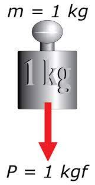

El kilopondio (símbolo kp), se define como la fuerza que imprime una aceleración igual a la gravitatoria normal estándar (9,80665 m/s² ) a la masa de un kilogramo. El kp es la unidad de fuerza del llamado Sistema Técnico de unidades (o sistema gravitacional). El kilopondio y el kilogramo fuerza son iguales y tiene la misma definición.
Kilogramo fuerza / Kgf / Kilogramo peso / Kilopondio / Kp. Unidad de fuerza del sistema gravitacional de unidades.
En la práctica un kilopondio es igual a un kilogramo fuerza y también es igual a 9.8 Newtons.
Una balanza mide en realidad la fuerza que la tierra ejerce sobre la masa que se esta pesando, a esta fuerza se le llama peso. Coincidentemente, una masa de un kilogramo pesará exactamente un kilogramo fuerza, A NIVEL DEL MAR. Si esta misma balanza y la masa de un kilogramo se llevan al monte Everest, el cuadrante de la balanza indicara MENOS de un kilogramo. Esto no significa que disminuyo la masa sino que la tierra ejerce menos fuerza sobre la misma masa de un kilogramo es decir disminuyo el peso pero no la masa. La diferencia de la medición se explica porque el valor de la gravedad disminuye con la altura.
La variación del peso con la altura es despreciable por lo que, para fines prácticos en la superficie terrestre un kilogramo peso es en magnitud igual a un kilogramo masa. La casi igualdad entre las magnitudes del peso medido y la masa hace que el sistema gravitacional de unidades se siga usando aunque de forma parcial.
DEFINICIÓN EQUIVALENTE: para quien guste la definicion académica. El kilopondio es la unidad de medida de fuerza en el sistema gravitacional MKS. Un kilopondio es la fuerza que le imprime una aceleracion de 1 mt / seg2 a una masa de 1 UTM.
1Kp = 1 UTM x 1 mt / seg2